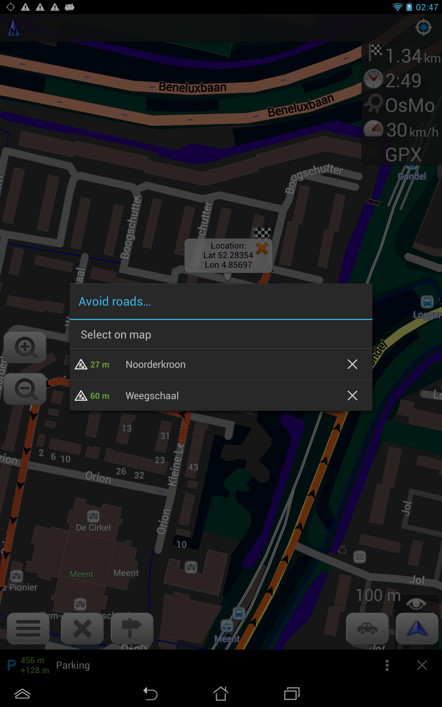

Version 1.9
Navigation and Routing
- Search POI along the route
- Get visual and audio notification by approaching to waypoint
- Mark road as impassable per session
- Support of turn lanes
- Longer route calculation up to 500km
- Special audio notifications in case you are back on the route
- Navigation takes into account traffic signals
- Traffic warnings can now be announced by type, like stop signs or speed bumps (TTS voices only).




Maps
- Public transport map and Subway map
- New options like showing road access restrictions, the road surfaces, the road surface quality etc. have been implemented in many map styles.
- Increase map details level independently from map text size

OsMo plugin
- Login/Logoff functionality
- Automatically download groups and devices for registered users
- Better error handling
Simplification of Background Trip Recording and Background Navigation

User Interface and Others Features
- Easier to download and update maps
- Support Android Wear
- Print itinerary and turn information